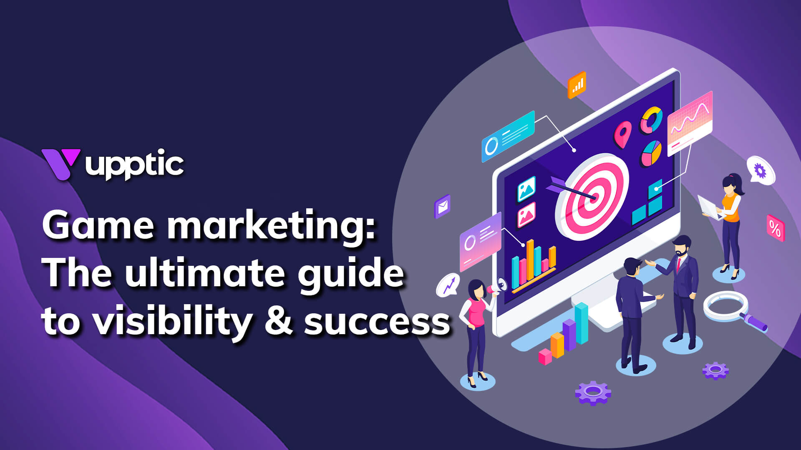
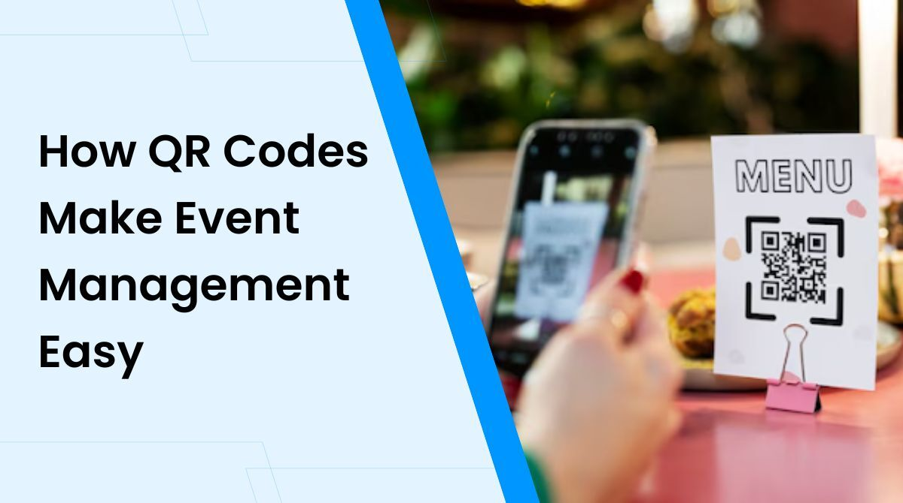

Types of Mobile Marketing Strategies for Event Management
This page explains how App-based Marketing is used by Event Management companies
to promote events, engage attendees, and manage registrations using mobile applications.
What is App-Based Marketing?
Poster: Event Mobile App – Registrations, Tickets & Notifications
App-based marketing refers to promoting events and engaging users through a dedicated mobile
application. Event Management companies create mobile apps to provide event schedules,
registrations, tickets, speaker details, venue maps, and real-time updates to attendees.
Mobile apps help improve user experience by offering all event-related information in one place.
They also allow event organizers to send push notifications, offers, reminders, and updates
directly to users' smartphones.
How App-Based Marketing is Used in Event Management
Event Registration & Ticketing
Users can register for events, book tickets, and download QR-code passes directly from the
event app, making the process fast and paperless.
Push Notifications
Event apps send instant alerts for event reminders, session updates, venue changes, and
important announcements to keep attendees informed.
In-App Promotions
Promote sponsors, partner brands, special offers, and premium event packages inside the app
to increase engagement and revenue.
Personalized Experience
Apps provide personalized schedules, session recommendations, and networking features based
on user interests and event preferences.
Benefits of App-Based Marketing for Event Management
App-based marketing increases engagement, improves communication, reduces manual work, and
provides valuable data about user behavior. Event organizers can track attendance, user
activity, and engagement to improve future event planning and marketing strategies.
Call-To-Action (CTA) Examples
✔ Download Our Event App
✔ Register for the Event Now
✔ Get Your Digital Pass
✔ Enable Event Notifications
✔ Explore Event Schedule
In-Game Mobile Marketing for Event Management
Poster: In-Game Ads – Banner, Full Screen & Video Ads
In-game mobile marketing refers to advertisements shown inside mobile games. Event Management
companies can promote concerts, exhibitions, product launches, and festivals to gamers while
they play. These ads appear naturally within the gaming environment and help brands reach a
younger, highly engaged audience.
In-game ads can be displayed as banner popups, full-screen image ads, or short video ads shown
between loading screens or game levels. This strategy is effective for creating awareness and
driving registrations for large public events.
Banner Ads in Games
Small banner ads displayed during gameplay to promote upcoming events, ticket offers,
and event websites.
Full-Page Image Ads
Full-screen visual ads shown between game levels to showcase event posters, artist lineups,
or product launch events.
Video Ads in Games
Short video ads displayed during loading screens or as rewarded ads to promote event
highlights, trailers, and registration links.
Advanced In-Game Marketing Strategies for Event Management

Poster: Rewarded Ads, Playable Ads & Location-Based Game Marketing
Event Management companies can use advanced in-game advertising techniques to increase brand recall
and drive event registrations. These strategies combine creativity with targeting to reach the right
audience at the right time.
Rewarded Video Ads
Players watch a short event promotion video in exchange for in-game rewards (coins, lives, or power-ups).
This creates positive brand association and higher engagement for events such as concerts and expos.
Playable Event Ads
Interactive mini-games themed around the event (e.g., racing game for car launch event or quiz for
exhibitions)
allow users to experience the event concept before registering.
Location-Based Game Ads
Ads shown to users near the event venue to promote nearby concerts, exhibitions, and product launches,
increasing footfall and local participation.
Event Countdown Ads
In-game ads with countdown timers create urgency for upcoming events and encourage users to register early.
Benefits of In-Game Mobile Marketing for Event Management
✔ High user attention compared to normal ads
✔ Strong brand recall through visual and video formats
✔ Reach younger and tech-savvy audiences
✔ Higher engagement with rewarded video ads
✔ Cost-effective awareness for large public events
Call-To-Action (CTA) Examples for Mobile Marketing
✔ Download the Event App
✔ Watch Event Trailer
✔ Register for Free Entry
✔ Book Your Seat Now
✔ Get Early-Bird Pass
✔ View Event Schedule
Video Example: Types of Mobile Marketing Strategies for Event Management
Poster: Mobile Marketing Strategies – App, Ads & QR
The video below demonstrates how different mobile marketing strategies such as app-based
marketing, push notifications, and in-game advertising can be used by Event Management
companies to promote events and engage audiences.
QR Code Marketing for Event Management

Poster: Users Scanning QR Code for Event Entry
QR codes are scanned by users using their smartphones and take them to a specific webpage,
registration form, event landing page, or offer page. Event Management companies use QR codes
on posters, banners, tickets, brochures, standees, and social media creatives to drive instant
traffic to their event websites.
QR codes are often aligned with mobile gamification and have an element of mystery, since users
don’t always know exactly what content they will see after scanning. This curiosity factor
increases engagement and encourages users to explore event details, offers, or surprise content.
QR Code for Event Registration
Scanning the QR code takes users directly to the event registration page, making sign-ups
fast and easy.
QR Code on Event Tickets
QR codes on digital or printed tickets are used for quick check-ins and entry validation
at the event venue.
QR Code for Offers & Contests
QR codes can unlock special offers, discount coupons, lucky draws, or gamified experiences
for event participants.
QR Code for Event Media
Scanning the QR code opens event photos, highlight videos, after-movie reels, or feedback
forms for attendees.
Sample QR Code (Demo)
(Demo QR Code – Scan to open a sample event registration page)
Location-Based Mobile Marketing for Event Management
Location-based mobile marketing targets users based on their real-time geographic location using GPS,
Wi-Fi, Bluetooth beacons, and mobile network data. Event Management companies use this strategy to
promote events to people who are physically near the event venue or in high-traffic locations such as
malls, colleges, business parks, and exhibition centers.
This strategy is highly effective because messages reach users at the right place and right time.
For example, users near an event venue can receive instant notifications about live shows,
registration desks, parking directions, entry gates, and last-minute ticket discounts.
Geo-Fencing Campaigns
Virtual boundaries are set around locations like malls, campuses, or event venues.
When users enter this area, they receive event ads, notifications, or special offers.
Nearby Event Alerts
Users receive mobile notifications about events happening nearby, increasing walk-ins
and last-minute registrations.
Venue Navigation & Directions
Location-based tools provide directions to parking zones, entry gates, halls, and stalls
inside large event venues or exhibitions.
Beacon-Based Engagement
Bluetooth beacons inside venues trigger notifications for stage schedules, sponsor booths,
live sessions, and exclusive offers for attendees.
Local Offer Promotions
Users near food courts, partner stores, or sponsor booths receive discount coupons
and limited-time deals during the event.
Location-Based Retargeting
Visitors who previously visited the venue can be retargeted with ads for upcoming
events, early-bird passes, and VIP experiences.
Footfall Tracking
Event organizers analyze crowd movement patterns to optimize stall placement,
security deployment, and stage scheduling.
Emergency & Safety Alerts
Real-time location-based alerts help guide crowds during emergencies,
gate changes, or schedule updates.
Location-based marketing improves on-ground engagement, increases walk-in registrations,
enhances attendee experience, and helps event organizers make smarter decisions during
large-scale events such as exhibitions, concerts, trade fairs, and college festivals.
Mobile Search Ads for Event Management
Poster: Mobile Search Ads – Event Promotion on Google & Mobile Search
Mobile Search Ads are paid advertisements that appear on mobile search engine results when users
search for keywords like “event management company near me”,
“car launch event organizer”, or “concert tickets near me”.
Event Management companies use these ads to capture high-intent users who are already looking
for event services or upcoming events.
These ads are shown at the top of mobile search results, making them highly visible and effective
for generating quick leads, registrations, ticket sales, and inquiries. Mobile search ads work
best when combined with location targeting, call buttons, and instant landing pages.
“Near Me” Search Targeting
Ads appear when users search for nearby event services such as
“event planner near me” or “conference hall near me”, increasing local inquiries.
Click-to-Call Ads
Mobile search ads include call buttons that allow users to directly call the event
management company for quick bookings and inquiries.
Keyword-Based Event Promotion
Ads are triggered based on keywords like “product launch event”, “wedding planner”,
“corporate event agency”, and “music concert tickets”.
Landing Page Optimization
Mobile-optimized landing pages help convert visitors into registrations, bookings,
and ticket purchases.
Event Countdown Ads
Ads highlight limited seats, early-bird offers, and countdown timers to create urgency
for event registrations.
Location Extensions
Mobile ads display event venue addresses and map directions, making it easy for users
to find the event location.
Retargeting Search Ads
Users who previously visited your event website are retargeted with ads when they search
related keywords again.
Call & Lead Tracking
Event managers can track phone calls, form submissions, and ticket purchases to measure
ROI of mobile search ad campaigns.
Mobile search ads are one of the fastest ways to get quality leads for event management services.
They deliver high-intent traffic, instant visibility, measurable results, and better ROI compared
to many other mobile marketing strategies.
Mobile App Marketing for Event Management
Poster: Mobile App Marketing – Promote Events via Event Apps & Notifications
Mobile App Marketing refers to promoting events and event management services through a dedicated
mobile application. Event Management companies design branded mobile apps to improve user experience,
simplify registrations, provide digital tickets, send live updates, and build long-term relationships
with attendees.
Mobile apps help event organizers stay connected with their audience before, during, and after the event.
Features like push notifications, in-app banners, personalized schedules, and real-time alerts increase
engagement and ensure attendees don’t miss important sessions, offers, or announcements.
Event Discovery & Listings
Users can explore upcoming events, filter by category (concerts, exhibitions, conferences),
and discover trending events directly inside the app.
In-App Ticket Booking
Attendees can purchase tickets, choose seats, apply promo codes, and store digital passes
securely inside the mobile app.
Push Notification Campaigns
Send personalized reminders, early-bird offers, event countdown alerts, and schedule changes
directly to users’ phones.
In-App Advertising for Sponsors
Sponsors and partners can promote their brands inside the event app using banners,
featured listings, and special offers.
Personalized Event Experience
Apps suggest sessions, speakers, and stalls based on user interests and past behavior,
creating a customized experience for every attendee.
Networking & Chat Features
Attendees can connect with speakers, exhibitors, and other participants using in-app
messaging, QR profile scans, and meeting schedulers.
Live Polls & Feedback
Event organizers collect real-time feedback, run polls, quizzes, and surveys during sessions
to increase audience interaction.
Post-Event Engagement
Share photos, highlight videos, certificates, and feedback forms after the event to keep
the audience engaged even after the event ends.
Mobile App Marketing builds long-term brand loyalty for event management companies. It increases
repeat attendance, improves communication, boosts sponsor visibility, and provides valuable
insights into attendee behavior for future event planning.